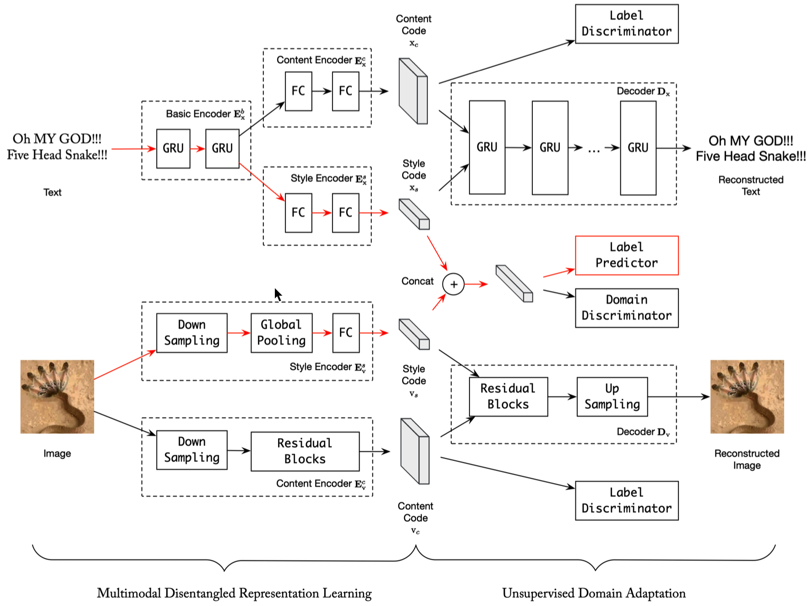

Huaiwen Zhang张怀文ProfessorDepartment of Computer Science and Technology College of Computer Science Inner Mongolia University 235 College Road, Hohhot, China 010021
|
|
Biography
I am currently a Professor in National and Local Joint Engineering Research Center of Mongolian Intelligent Information Processing, Inner Mongolia University. I received my Ph.D. degree in Pattern Recognition and Intelligent System from Multimedia Computing Group (MMC), National Laboratory of Pattern Recognition, Institute of Automation Chinese Academy of Sciences, advised by Prof. Changsheng Xu, Associate Prof. Shengsheng Qian, and Associate Prof. Quan Fang. I received a BE degree from the Department of Computer Science and Technology, of Inner Mongolia University (IMU), in 2016.
My research interests include Multimedia Computing, Social Media Data Mining, and Multimedia Retrieval. My recent work is mainly about deep learning based multimedia understanding, focusing on cross-modal retrieval and social event detection.
I am recruiting self-motivated interns, Master, Ph.D., and Post-doctor in deep learning based multimedia understanding, and most importantly, cross-modal retrieval systems. If you are interested, please directly send your CV to my email.
Publications
-
Feeling Without Sharing: A Federated Video Emotion Recognition Framework Via Privacy-Agnostic Hybrid Aggregation ,
Fan Qi, Zixin Zhang, Xiaoshan Yang, Huaiwen Zhang, Changsheng Xu
ACM Multimedia (MM), 2022
-
Alleviating the Loss-Metric Mismatch in Supervised Single-Channel Speech Enhancement ,
Yang Yang, Hui Zhang, Xueliang Zhang, Huaiwen Zhang
International Conference on Acoustics, Speech and Signal Processing (ICASSP), 2022
-
Efficient Graph Deep Learning in TensorFlow with tf_geometric ,
Jun Hu, Shengsheng Qian, Quan Fang, Youze Wang, Quan Zhao, Huaiwen Zhang, Changsheng Xu
ACM Multimedia (MM), 2021
-
Dual Adversarial Graph Neural Networks for Multi-label Cross-modal Retrieval ,
Shengsheng Qian, Dizhan Xue, Huaiwen Zhang, Quan Fang, Changsheng Xu
AAAI Conference on Artificial Intelligence (AAAI), 2021
-
Global Relation-Aware Attention Network for Image-Text Retrieval ,
Jie Cao, Shengsheng Qian, Huaiwen Zhang, Quan Fang, Changsheng Xu
ACM International Conference on Multimedia Retrieval (ICMR), 2021
-
 Multi-modal Meta Multi-Task Learning for Social Media Rumor Detection ,
Multi-modal Meta Multi-Task Learning for Social Media Rumor Detection ,
Huaiwen Zhang, Shengsheng Qian, Quan Fang, Changsheng Xu
IEEE Transactions on Multimedia (TMM), 2021
-

Multimodal Disentangled Domain Adaption for Social Media Event Rumor Detection ,
Huaiwen Zhang, Shengsheng Qian, Quan Fang, Changsheng Xu
IEEE Transactions on Multimedia (TMM), 2020
-
Multi-modal Knowledge-aware Event Memory Network for Social Media Rumor Detection ,
Huaiwen Zhang, Quan Fang, Shengsheng Qian, Changsheng Xu
ACM Multimedia (MM), 2019
-
Learning Multimodal Taxonomy via Variational Deep Graph Embedding and Clustering ,
Huaiwen Zhang, Quan Fang, Shengsheng Qian, Changsheng Xu
ACM Multimedia (MM), 2018
-
A Demo for Image-Based Personality Test ,
Huaiwen Zhang, Jiaming Zhang, Jitao Sang, Changsheng Xu
International Conference on Multimedia Modeling (MMM), 2017
-
Visual BFI: An Exploratory Study for Image-Based Personality Test ,
Jitao Sang, Huaiwen Zhang, Changsheng Xu:
Pacific Rim Conference on Multimedia (PCM),2016
Best Paper Award
Service
- Member of China Computer Federation (CCF), Technical Committee of Multimedia Technology
- Member of Chinese Association for Artificial Intelligence (CAAI), Youth Working Committee
- Member of China Society of Image and Graphics (CSIG)
- Member of ACM, IEEE
- Program Committee Member of ICCV, CVPR, ECCV, AAAI, ACM MM, WWW,...
- Reviewer of TASLP, MMSJ...